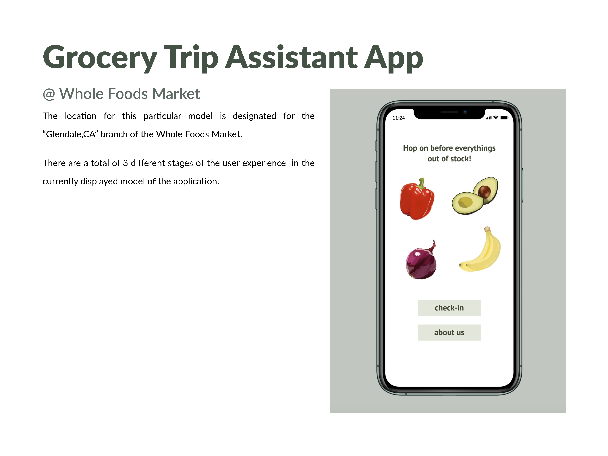
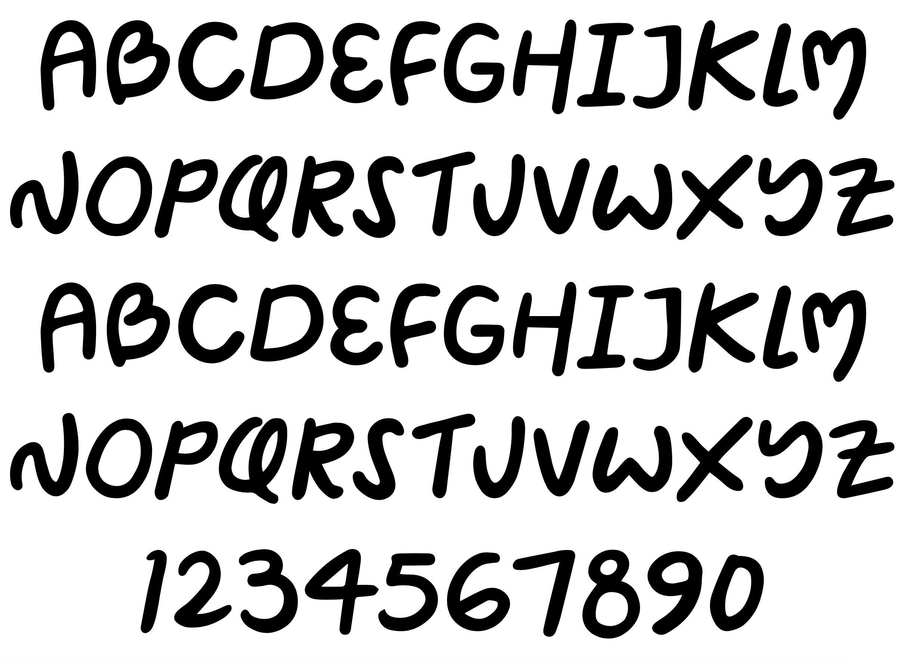
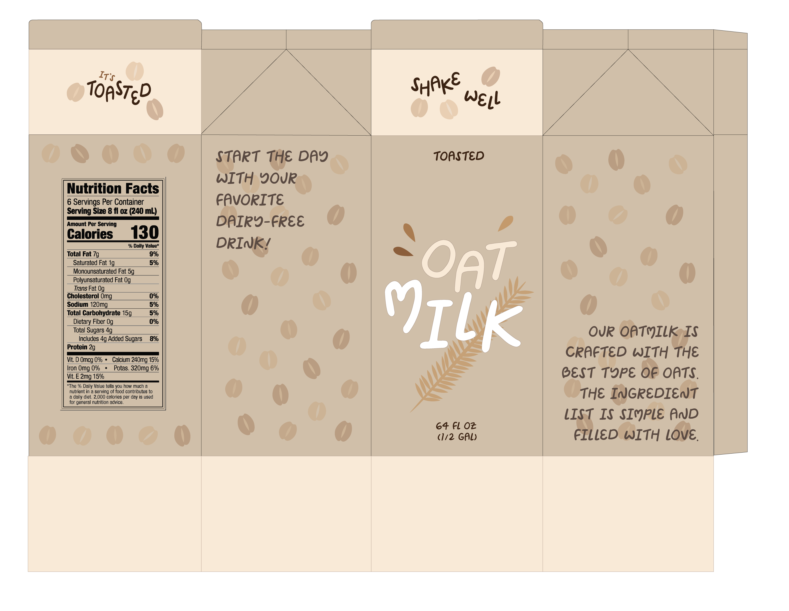
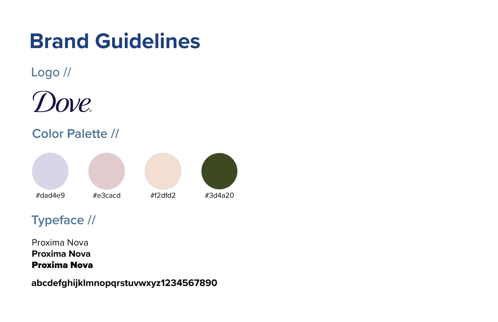
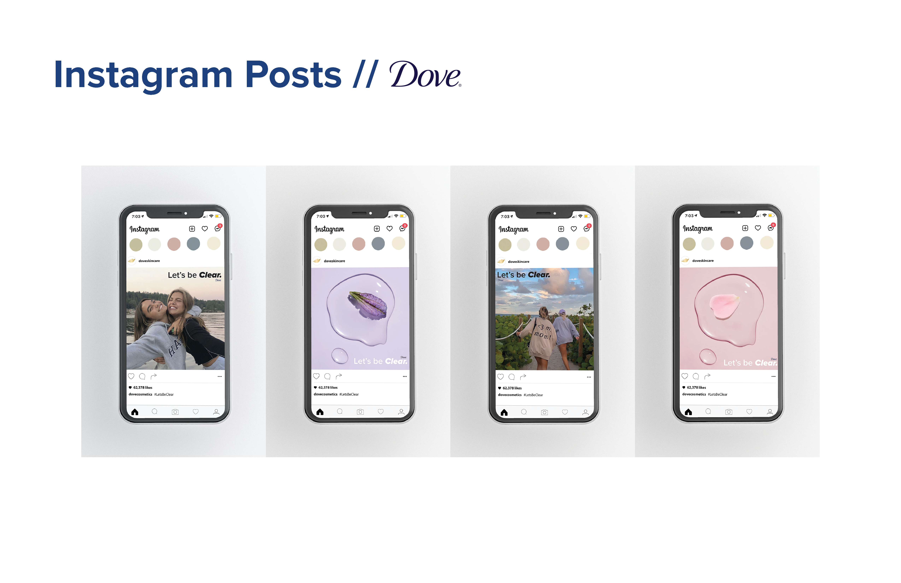
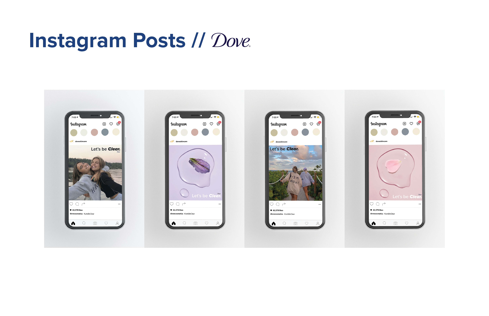

Welcome to my workspace where I explore graphic design.
Whole Foods Market's Grocery Trip Assistant
Whole Foods Market’s Grocery List Advisor App will assist people waiting in line to be less anxious when getting groceries through a simplistic yet fun guide that keeps the customer moving physically and mentally.
The Grocery Trip Assistant app will not only let the users keep track of the products that they need but let them check the availability in the store they are located in. There is also a feature that keeps the users lookout for the place markers (6 feet apart) for a surprise once they reach the end.
Below is the preview of the app trial.
Package Design of Oatmilk with Typeface Design
I designed and put together a typeface and implemented the typeface into the package design. The typeface is made to be available in any app the typeface is added to. I named the typeface Teacher's Pet because the style reminded me of that. I thought since the font is a softer style, I used oatmilk as the package to design.
 Rebranding Project : Dove
Dove is a staple skincare brand that most people are aware of. They are a neutral brand, but it seems to rarely be the current generation’s skincare favorites. The current generation prefers brands that are transparent with their ingredients with straightforward derivatives. Being open and appraochable will let the audience feel as if they are welcomed and give more trust towards the brand itself.
Dove’s #Let’sBeClear campaign will lead the audience to feel as if they are getting advice from their older sibling when they use the products. This will not only let the current generation feel like the ingredients are trustworthy and not have second thoughts towards making the products the necessities in their daily skincare routine.
 
